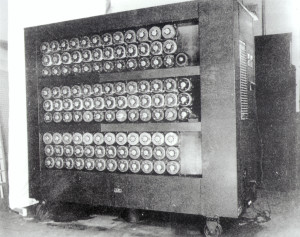

Inglese
Biografia Alan Turing

Alan Turing was born in London on the 23 of June, 1912.
During World War II, Turing worked for the Goverment Code and Cypher school for helping in the design of the BOMBE. This machine
searched for possible correct settings used for an Enigma message. The first BOMBE was build on the 18th March 1940, but it had a bad success. In 1942,
Turing created Colossus managed to crack the codes of Lorenz machine.
After World War II, Turing continued research into digital computers. In January 1952, he started
a relationship with Arnould Murray. Next his house was burgled. Turing reported the crime to the police, but during the investigation, they acknowledged
a sexual relationship with Murray. He had to choice between imprisonment and hormonal treatment. He accepted the option of treatment, but it rendered Turing
impotent. He died in 1954 through a poisoned apple